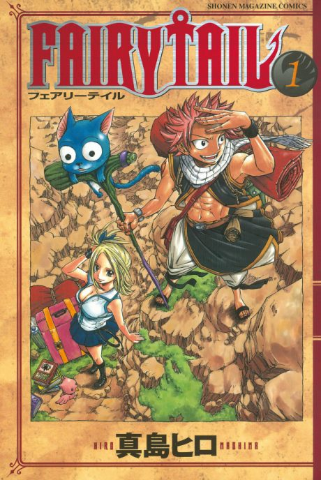

Fairy Tail
FAIRY TAIL
The anime covers the whole manga.
7.2AniList score
—Animeter, no votes yet
353episodes, 4 seasons
Key events
These are spoilers. They stay blurred until you reveal them, one at a time or all at once.
Macao Arc Ep 1–2
- Natsu rescues Lucy from a fake 'Salamander' who was trafficking girls, then brings her to Fairy Tail.
- Lucy joins the guild and receives her guild mark.
- Natsu climbs Mt. Hakobe alone and brings back Macao, Romeo's missing father.
Daybreak Arc Ep 3–4
- Lucy's maid disguise fails and the team storms Duke Everlue's mansion instead.
- The book Daybreak turns out to hide a message from its author to his son, so the team refuses the reward.
Lullaby Arc Ep 5–10
- Erza, Natsu, Gray and Lucy form what fans call Team Natsu.
- Erigor of Eisenwald plans to play the death flute Lullaby at a meeting of guild masters.
- Natsu defeats Erigor, and Lullaby reveals itself as a demon of Zeref that the guild masters help destroy.
- Erza is briefly arrested by the Magic Council as a formality for the property damage.
Galuna Island Arc Ep 11–20
- Gray meets his fellow apprentice Lyon, who wants to revive the demon Deliora frozen by their teacher Ur.
- The island's 'cursed' villagers turn out to be demons whose memories were warped by the Moon Drip ritual.
- Gray defeats Lyon and Deliora crumbles, already killed long ago by Ur's Iced Shell.
- Erza arrives to drag the trio home but helps them finish the job first.
Phantom Lord Arc Ep 21–29
- Gajeel beats Levy's team and pins them to a tree, provoking Fairy Tail into war.
- Phantom Lord was hired by Lucy's wealthy father to bring her home.
- Natsu defeats Gajeel, and Makarov uses Fairy Law to defeat Master Jose.
- Lucy confronts her father and cuts ties with him.
Loke Arc Ep 30–32
- Loke is revealed to be the Celestial Spirit Leo, banished to the human world after the death of his former owner Karen.
- Lucy defies the Celestial Spirit King to save him, and Loke becomes her spirit.
Tower of Heaven Arc Ep 33–40
- Erza's past as a child slave building the Tower of Heaven is revealed.
- Jellal, possessed by his obsession with Zeref, plans to use the tower as an R-System to revive him.
- The Magic Council fires Etherion at the tower; Natsu eats the Etherion-infused lacrima and defeats Jellal.
- Simon dies shielding Erza, and Erza is saved by Jellal as the tower collapses.
Battle of Fairy Tail Arc Ep 41–48
- Laxus turns the girls to stone and makes the members fight each other to win them back.
- The Thunder God Tribe is defeated one by one.
- Natsu and Gajeel together defeat Laxus, and Mystogan's identity is briefly glimpsed.
- Makarov expels Laxus, who salutes the guild during the Fantasia parade.
Oración Seis Arc Ep 49–68
- Wendy Marvell and Carla of Cait Shelter are introduced as allies.
- Jellal is revived but has lost his memories and turns against Oración Seis.
- Natsu defeats Zero to stop the superweapon Nirvana.
- Cait Shelter is revealed to be an illusion, and Wendy and Carla join Fairy Tail.
Daphne Arc Ep 69–75
- Daphne lures Natsu with the promise of information about Igneel so she can drain his dragon power.
- Fairy Tail fights her Dragonoid weapon, and Natsu breaks free to destroy it.
Edolas Arc Ep 76–95
- Happy and Carla learn that Exceeds were sent to Earth Land on a mission to hunt Dragon Slayers.
- The team meets alternate versions of their guildmates in Edolas.
- Mystogan is revealed as Edolas's Prince Jellal and helps restore balance.
- Lisanna, thought dead, is found alive in Edolas and returns to Earth Land.
Tenrou Island Arc Ep 96–122
- Zeref appears on the island, and Grimoire Heart's master Hades seeks to awaken him.
- Gildarts reveals he is Cana's father.
- Makarov and the guild defeat Hades, with Laxus returning to help.
- The black dragon Acnologia attacks, and the members on the island vanish, frozen in time for seven years by Fairy Sphere.
X791 Arc Ep 123–124
- Romeo and the remaining members have kept the struggling guild alive.
- Lucy learns her father has died during her absence.
Key of the Starry Sky Arc Ep 125–150
- The Oración Seis remnants (Reborn Oración Seis) and the Legion fight over the clock's pieces.
- Lucy is captured and used as part of the clock's activation.
- Fairy Tail stops the clock and saves Lucy.
Grand Magic Games Arc Ep 151–203
- Fairy Tail enters two teams and battles Sabertooth, led by Dragon Slayers Sting and Rogue.
- Natsu and Gajeel defeat Sting and Rogue, and Fairy Tail wins the Games.
- Future Rogue opens the Eclipse Gate, releasing seven dragons on Crocus.
- Future Lucy dies protecting the present, and the Dragon Slayers fight the dragons until the gate is closed.
Eclipse Celestial Spirits Arc Ep 204–226
- Lucy's spirits break their contracts and attack Fairy Tail as 'Eclipse Spirits' with reversed personalities.
- Lucy and the guild work to restore the spirits and return them to the Celestial Spirit World.
Sun Village Arc Ep 227–233
- The village's eternal flame turns out to be the dragon Atlas Flame.
- Natsu frees the dragon from the ice, and it tells him a cryptic message about Igneel.
Tartaros Arc Ep 234–265
- Tartaros kills most of the Magic Council and targets its former members.
- Lucy sacrifices Aquarius' key to summon the Celestial Spirit King.
- Igneel emerges from inside Natsu, fights Acnologia, and is killed by it.
- Makarov disbands Fairy Tail after the battle.
Fairy Tail Zero Arc Ep 266–275
- Mavis meets Yuri, Precht and Warrod on Tenrou Island.
- Mavis meets Zeref and learns from him.
- The four found Fairy Tail together.
Avatar Arc Ep 276–284
- Natsu and Lucy find their friends living new lives across Fiore.
- Gray, Juvia and Erza work to stop the dark cult Avatar from carrying out a mass sacrifice.
- Fairy Tail is officially reformed and Makarov's whereabouts in Alvarez come to light.
Alvarez Empire Arc Ep 285–328
- Zeref is revealed as Emperor Spriggan and Natsu as his younger brother E.N.D.
- Makarov sacrifices himself using Fairy Law against the Alvarez army.
- Mavis and Zeref's curse is lifted when Natsu and Mavis confront Zeref together.
- The Dragon Slayers defeat Acnologia in a final battle inside time, and the guild celebrates.